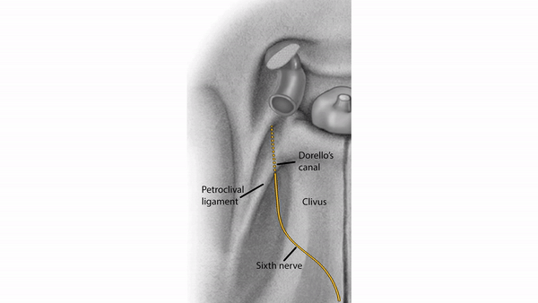

( of )
Correct: 0
Incorrect: 0
 A 10 year old boy complains of severe left ear pain of one week’s duration. Diplopia started two days ago. Examination shows cloudiness and redness of the left eardrum (tympanum). He has reduced abduction of the left eye and esotropia. Imaging shows opacification of the left mastoid space.
A 10 year old boy complains of severe left ear pain of one week’s duration. Diplopia started two days ago. Examination shows cloudiness and redness of the left eardrum (tympanum). He has reduced abduction of the left eye and esotropia. Imaging shows opacification of the left mastoid space.

The lesion causing the neuro-ophthalmic abnormality likely to lie in
Incorrect
Correct!
The association between middle ear infection and sixth nerve palsy was described long ago by Gradenigo and is now known as “Gradenigo’s syndrome.” The sixth nerve in the tight space of Dorello’s canal is vulnerable to a “compartment syndrome” as infections and cancers come from a lateral source in the petrous bone, from a medial source in the clivus (a favorite site for cancer metastasis), and from an inferior source in the sphenoid sinus (infections and cancer). You cannot be faulted here if you chose “transverse-sigmoid (dural) sinus junction” as your answer. Inflammation from middle ear infections can cause venous sinus thrombosis here, raising intracranial pressure and causing a sixth nerve palsy. Why? Because the sixth nerve is tethered at Dorello’s canal, so when intracranial pressure goes up and forces the brain downward, the nerve stretches and fails to conduct messages. A similar mechanism applies when intracranial pressure suddenly goes down (“intracranial hypotension”)—either spontaneously or after inadvertent dural puncture. The brain slides downward, pulling the sixth nerve with it and impairing its function.

The likely cause of the diplopia is a left sixth nerve palsy. He has an infection in the middle ear (“otitis media”) that has spread to the mastoid region. How can you connect that infection with the sixth nerve palsy? By assuming that the infection has spread through the petrous bone to its apex, where the bone forms the lateral wall of Dorello’s canal, the narrow space through which the sixth nerve travels to get from the subarachnoid space into the cavernous sinus
Correct!